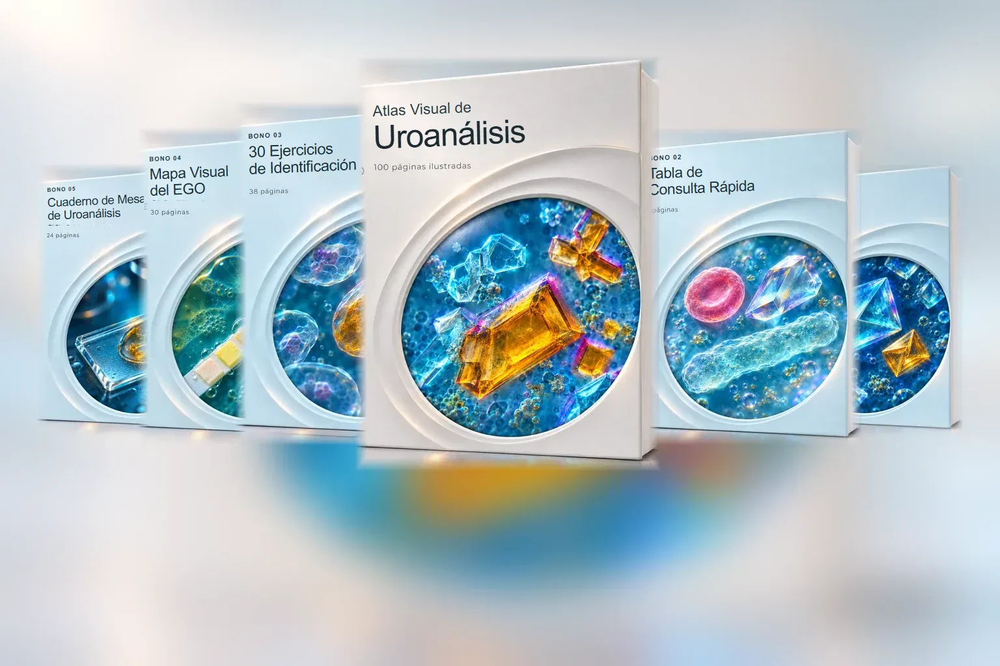
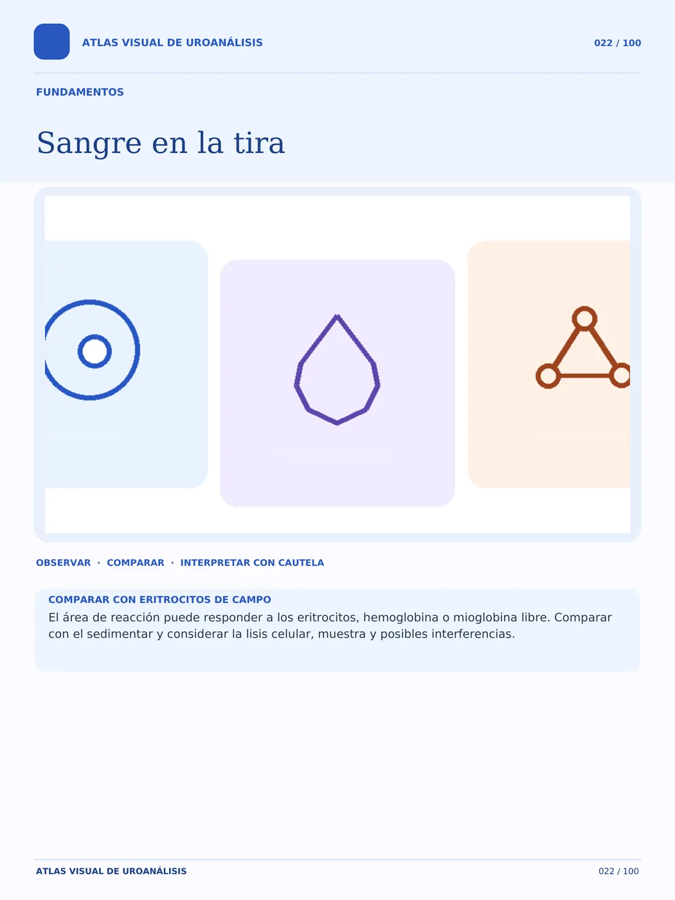
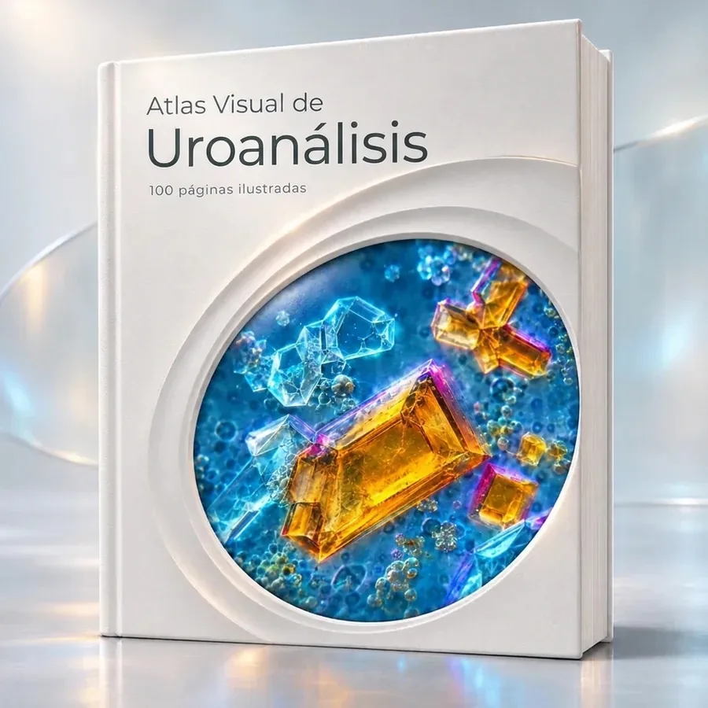
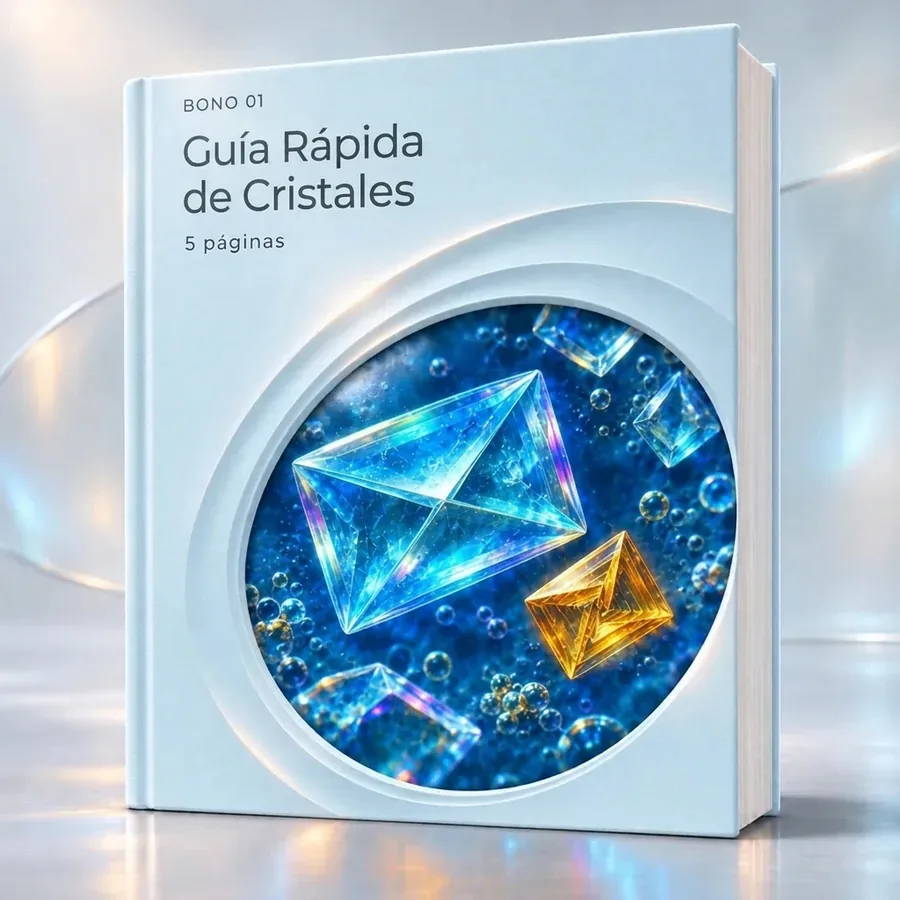
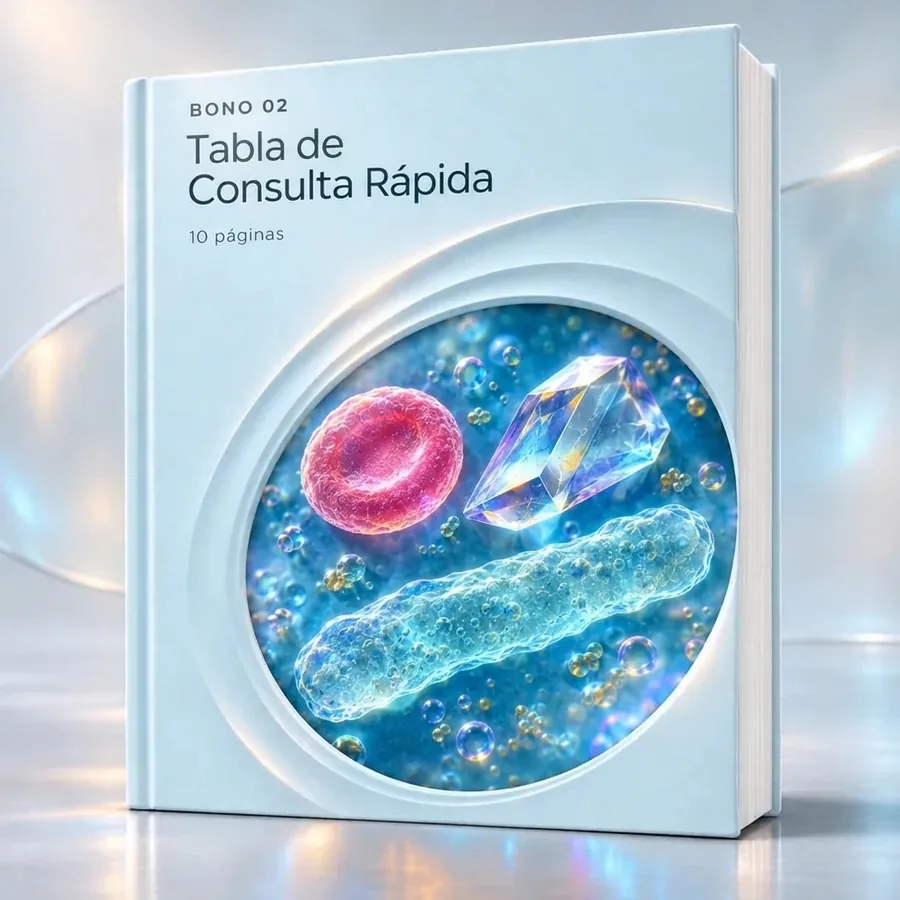
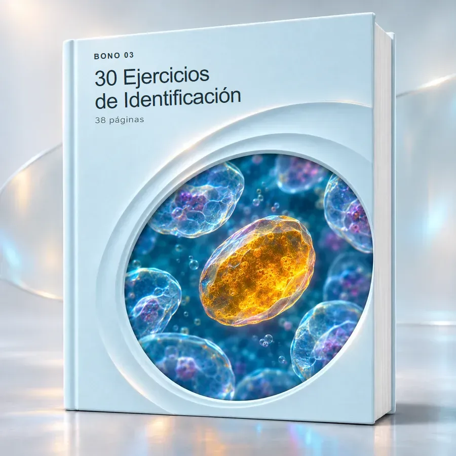
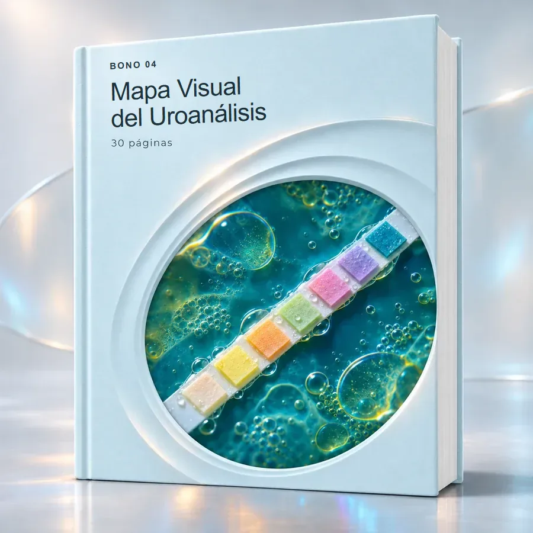
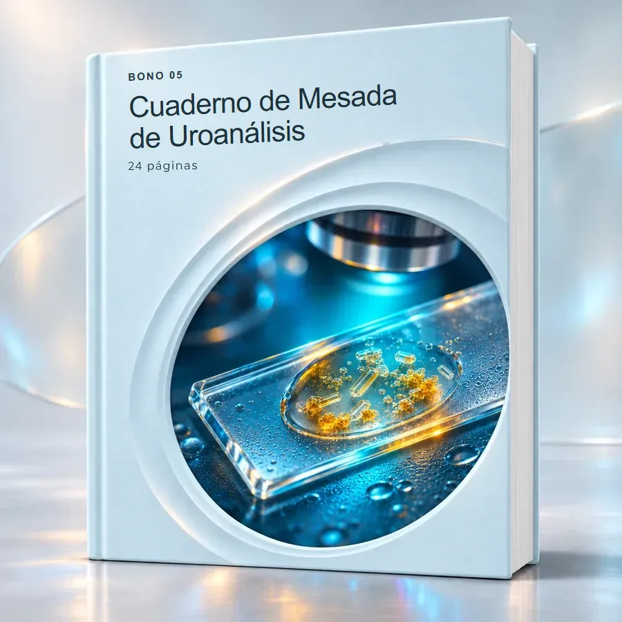

Tantos elementos en el campo. ¿Qué examinar primero?
El Atlas organiza el examen desde la recolección, conservación y preparación del sedimento hasta el barrido en 100x y el detalle en 400x.
Sigue una secuencia visual para entender dónde mirar, qué detalles observar y cómo diferenciar estructuras parecidas. Recibe la biblioteca completa de +207 páginas (Atlas Visual + 5 Bonos de Laboratorio gratuitos) con micrografías anotadas, comparaciones lado a lado y casos guiados del EGO.

Memorizar nombres aislados es solo una parte. La verdadera dificultad surge en el laboratorio cuando dos estructuras se parecen al microscopio o cuando la tira reactiva parece contradecir al sedimento.
Mira cómo una ficha conecta estos elementos →El Atlas organiza el examen desde la recolección, conservación y preparación del sedimento hasta el barrido en 100x y el detalle en 400x.
Fichas comparativas lado a lado muestran cómo distinguir hematíes de levaduras, moco de cilindros hialinos y cristales similares.
Mapas visuales y casos guiados explican cómo cruzar color, densidad, pH y tira reactiva con la microscopía y reconocer interferentes.
Esta es la página 04 del Atlas Visual: “Cómo leer una ficha”. Cada elemento del sedimento se presenta con micrografía anotada, criterios morfológicos y límites de identificación.
Identifica contorno, tamaño relativo, refracción, núcleo, granulaciones o caras cristalinas en los aumentos de 100x y 400x.
Confronta estructuras parecidas lado a lado (como hematíe × levadura o cilindro hialino × moco) y crúzalas con el pH y la tira reactiva.
Reconoce los límites de cada hallazgo, evita trampas por artefactos y organiza el informe técnico con seguridad.
Toca los objetivos a continuación para simular la rutina de microscopía del sedimento: empieza por el barrido panorámico en 100x y profundiza en los rasgos morfológicos en 400x.
A menor aumento y con el condensador bajo, recorres los bordes del cubreobjetos para localizar matrices cilíndricas de bajo índice de refracción antes de pasar a 400x.
Explora 10 páginas de muestra seleccionadas del Atlas Visual: fundamentos, tira reactiva, células, cristales, cilindros, comparaciones lado a lado y casos comentados. Abre el libro o toca una vista previa para observar los detalles.
Páginas extraídas directamente del PDF del Atlas Visual de Uroanálisis. Abre el libro, hojéalo y toca cualquier página para ampliarla.
Selecciona uno de los 5 dilemas clásicos del laboratorio de uroanálisis y mira exactamente qué criterios ópticos separan cada estructura:
Estructuras incoloras y redondeadas que suelen generar falsas alertas de hematuria.
Busca una yema adherida (gemación), pared más refringente y variación de calibre entre células cercanas. No sufre lisis con ácido acético.
Contorno circular uniforme, doble halo al mover el enfoque micrométrico y ausencia de gemación. Se correlaciona con sangre en la tira.
Selecciona cualquier parámetro de la tira bioquímica a continuación para revisar qué observar en el portaobjetos y cómo actuar cuando los resultados parecen discrepar:
Actividad pseudoperoxidásica del grupo hemo (hematíes íntegros, hemoglobina libre post-lisis o mioglobina). Lectura en 60 segundos.
Busca hematíes isomórficos o dismórficos en 400x, además de cilindros hemáticos en 100x.
Tira positiva con sedimento sin hematíes sugiere lisis celular (orina alcalina o hipotónica) o mioglobinuria. El ácido ascórbico (vitamina C) elevado puede causar falso negativo en la tira.

Una secuencia visual para estudiar el examen general de orina, desde la recolección y preparación hasta la microscopía y el informe.
Reconoce tipos de muestra, recolección de chorro medio, tiempo transcurrido y conservación.
Relaciona color, aspecto, densidad, pH y áreas reactivas con sus tiempos de lectura.
Ejecuta centrifugación, resuspensión, barrido inicial en 100x y detalle morfológico en 400x.
Identifica células, cristales, cilindros, microorganismos y artefactos por sus rasgos ópticos.
Consulta las fichas lado a lado cuando dos elementos tengan contorno o refracción similares.
Cruza tira y sedimento en los casos guiados, mapas visuales y ejercicios comentados.
El núcleo de la biblioteca: 100 páginas ilustradas en el Atlas Visual, organizadas para el estudio secuencial o la consulta rápida en el laboratorio.

El contenido acompaña el examen completo: recolección de chorro medio, conservación, examen físico, parámetros químicos de la tira reactiva y fichas detalladas de células, cristales, cilindros, microorganismos y artefactos.
Compara directamente estructuras que generan duda en la mesada, con flechas y notas que explican exactamente dónde mirar y qué límites considerar antes de clasificar el hallazgo.
Aplica la lectura integrada en casos simulados (hematuria, bacterias y leucocitos, cristales en orina ácida y sospecha de efecto medicamentoso) y localiza cualquier elemento mediante los índices visuales.
Material didáctico de apoyo. No sustituye la formación supervisada, los procedimientos operativos estándar del laboratorio ni el criterio de un profesional habilitado.
107 páginas adicionales distribuidas en 5 materiales prácticos para acompañar tu mesada de trabajo, entrenar la identificación y organizar tu criterio diagnóstico.

Reúne oxalato de calcio, ácido úrico, estruvita, cistina y otros cristales, con claves prácticas para diferenciar formas parecidas a primera vista.

Cada entrada reúne imagen, nomenclatura y rasgos morfológicos organizados por categorías para localizar rápidamente cualquier célula, cilindro o cristal.

Cada ejercicio presenta una micrografía real y cuatro opciones. Registra tus respuestas y comprueba en el solucionario qué detalles del campo sustentan la identificación.

Conecta el aspecto de la muestra, los resultados de la tira reactiva y la microscopía del sedimento —incluso cuando los hallazgos parecen discrepar— más 3 casos y flujograma.

Incluye listas de verificación, fichas por tipo de hallazgo, tres prácticas con micrografías y hojas reutilizables rellenables en el propio PDF o listas para imprimir.
Testimonios de profesionales y estudiantes de laboratorio clínico, bioquímica, bacteriología, farmacia y medicina que utilizan el Atlas Visual como referencia rápida. Pasa el cursor sobre una tarjeta para pausar.
Adquiere hoy el Atlas Visual de Uroanálisis (100 páginas) por un pago único de $ 7,90 y recibe gratuitamente los 5 bonos prácticos (+107 páginas adicionales) para consultar, practicar y registrar en el laboratorio.
Estudia, compara, practica y registra en el laboratorio con la biblioteca completa de 207 páginas.
Acceso inmediato · Sin suscripción
🎁 Te llevas gratis los 5 Bonos (+107 páginas) Accede al paquete completo de 6 materiales (+207 páginas en PDF) por este único valor promocional.
Quiero el Atlas + 5 Bonos por $ 7,90 → Material digital en PDF · Acceso inmediato · Garantía incondicional de 7 díasAcceso inmediato a los 6 materiales digitales en PDF (+207 páginas) y garantía incondicional de 7 días. Los libros y dispositivos de los mockups son representaciones ilustrativas.
Todo lo que necesitas saber sobre el formato, el acceso inmediato y los 5 bonos incluidos.
Es un material de estudio y consulta rápida en formato digital (PDF) con 100 páginas ilustradas para quienes desean aprender a reconocer y describir lo que aparece en el sedimento urinario, con micrografías anotadas, comparaciones lado a lado y casos guiados.
¡Sí! Por solo $ 7,90 (pago único), recibes el paquete completo de +207 páginas: el Atlas Visual de Uroanálisis (100 páginas) y te llevas gratuitamente los 5 bonos exclusivos de mesada: Guía Rápida de Cristales (5 pág.), Tabla de Consulta Rápida de 36 elementos (10 pág.), 30 Ejercicios de Identificación con solucionario comentado (38 pág.), Mapa Visual del Uroanálisis (30 pág.) y Cuaderno de Mesada (24 pág.).
Son archivos digitales en formato PDF de alta resolución. Puedes estudiarlos en tu computadora, tablet o teléfono móvil, o imprimir las páginas, tablas y checklists que desees utilizar en el laboratorio.
Sí. El Cuaderno de Mesada de Uroanálisis permite rellenar los campos directamente en tu lector de PDF o imprimir las hojas reutilizables para usarlas durante la clase práctica, el internado o la rutina diaria.
Sí. Puedes estudiar en secuencia —desde la recolección y preparación de la muestra hasta la tira reactiva y la microscopía— o abrir directamente en la duda que surgió durante la guardia o el análisis de rutina.
Sí. En esta misma página puedes usar el visor óptico interactivo, el comparador lado a lado, el simulador de tira reactiva, el libro virtual hojeable y las galerías con páginas de muestra ampliables.
Es un pago único de $ 7,90 con acceso completo al Atlas Visual y a los 5 bonos gratuitos. No hay mensualidades ni cobros recurrentes, y cuentas con 7 días de garantía incondicional.